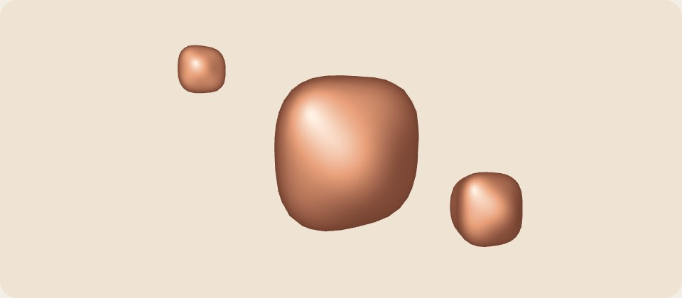

Soft things, made by hand
Three lumps of clay turn slowly under one gentle light. The picture below is drawn live with three.js; without 3D graphics, or with reduced motion, it is a still.

Everything on this page except the picture works without it.
Further down the page, past the picture: it stops drawing once it is out of view.